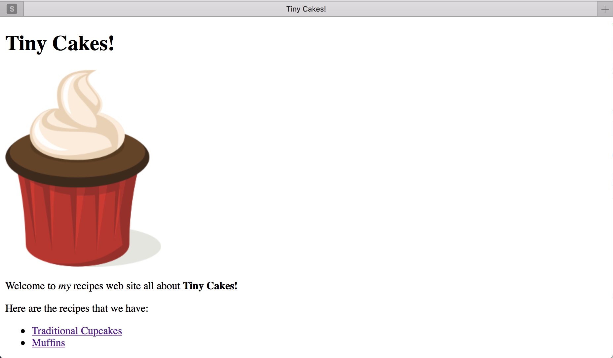
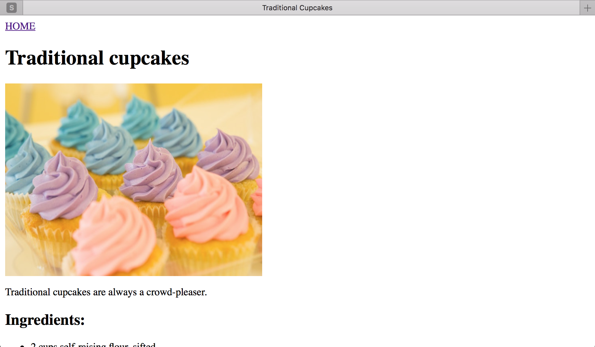

Etapy:
Step 6 - Obrazki
Obrazki
Obrazki na naszą stronę dodajemy za pomocą tagu image/obrazek <img>.
Dodajmy zatem logo naszej strony powyżej nagłówka Tiny Cakes!.
Oczywiście będziemy potrzebowali jakiś obrazków. Przejdź do https://openclipart.org/detail/298756/cupcake-2 i ściągnij na swój komputer mniejszy obrazek. Przenieś teraz plik do folderu w którym stworzyliśmy nasze strony i zmień jego nazwę na tinycakes.png
Otwórz index.html i wklej poniższy kod przed znacznikiem <h1>:
<img src="tinycakes.png" title="Tiny Cakes!" alt="The Tiny Cakes logo, a stylized cartoon cupcake."/>
Zapisz i odśwież stronę.

Nieźle! Spójrzmy na nowy fragment kodu.
Atrybut src informuje o ścieżce (adresie url) obrazu.
Może to być ścieżka względna lub cały adres URL, podobnie jak w przypadku atrybutu href parametru <a> .
W atrybucie title umieszczamy nazwę obrazka. W niektórych przeglądarkach wyświetli się ona jako tool tip, czyli napis w bloku, który pojawia się po najechaniu kursora na obrazek.
Atrybut alt powinien zawierać opis obrazka. Tekst wprowadzony tutaj wyświetli się, kiedy obrazek nie będzie mógł zostać wyświetlony przez przeglądarkę.
Atrybuty title i alt są ważne dla osób niewidomych bądź słabym wzroku, gdyż mogą one korzystać ze specjalnych oprogramowań czytających dla nich strony web.
Atrybutyheight i width służą do kontrolowania wielkości obrazu.
Może zaktualizujemy nasz tag <img> aby nasz obrazek był nieco mniejszy.
<img src="tinycakes.png" title="Tiny Cakes!" alt="The Tiny Cakes logo, a stylized cartoon cupcake." height="47" width="37" />
Zauważ, że tag img nie znaczników otwierających i zamykających. Po prostu kończy się /> zamiast >. Nazywa się to tagiem samozamykającym. Takich tagów jest w HTML kilka. Zwykle są to tagi określające element strony, który nie jest tekstem. W naszym przypadku obraz.
Zanim przejdziesz do następnego kroku, spróbuj dodać odpowiedni obraz do każdej strony z przepisami. Skorzystaj ze strony z obrazkami, np. https://www.stockfreeimages.com/, aby znaleźć i zapisać zdjęcia babeczek i mufinek oraz dodać je do odpowiednich podstron z przepisami.

W następnym kroku poznasz i nauczysz się jak korzystać CSS by odpicować nieco nasze proste strony.